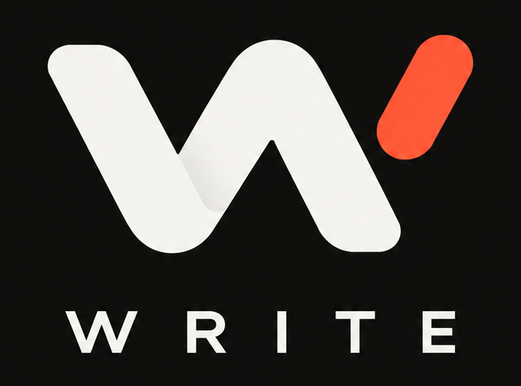
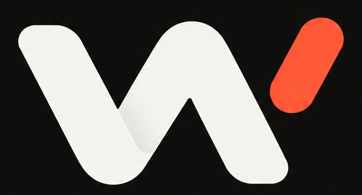

<!doctype html>
<html lang="de" data-theme="system">
<head>
<meta charset="utf-8">
<meta name="viewport" content="width=device-width,initial-scale=1,viewport-fit=cover,maximum-scale=1">
<meta name="theme-color" content="#10100f">
<meta name="apple-mobile-web-app-capable" content="yes">
<meta name="apple-mobile-web-app-status-bar-style" content="black-translucent">
<meta name="apple-mobile-web-app-title" content="WRITE">
<link rel="manifest" href="manifest.webmanifest">
<link rel="icon" href="icon-192.png">
<link rel="apple-touch-icon" href="apple-touch-icon.png">
<title>WRITE</title>
<style>
:root{
  --accent:#ff5a36;--accent-soft:#ff5a3618;--danger:#e85050;--success:#40a66b;
  --radius:20px;--radius-sm:14px;--shadow:0 10px 32px rgba(0,0,0,.08);
}
html[data-theme="light"]{--bg:#f7f6f3;--surface:#fff;--surface2:#efede8;--text:#171614;--muted:#858078;--line:#e7e3dc;--glass:rgba(247,246,243,.9);--inverse:#11110f;--inverseText:#fff}
html[data-theme="dark"]{--bg:#10100f;--surface:#191817;--surface2:#211f1d;--text:#f5f3ef;--muted:#918b82;--line:#2b2926;--glass:rgba(16,16,15,.90);--inverse:#f5f3ef;--inverseText:#11110f}
@media(prefers-color-scheme:light){html[data-theme="system"]{--bg:#f7f6f3;--surface:#fff;--surface2:#efede8;--text:#171614;--muted:#858078;--line:#e7e3dc;--glass:rgba(247,246,243,.9);--inverse:#11110f;--inverseText:#fff}}
@media(prefers-color-scheme:dark){html[data-theme="system"]{--bg:#10100f;--surface:#191817;--surface2:#211f1d;--text:#f5f3ef;--muted:#918b82;--line:#2b2926;--glass:rgba(16,16,15,.90);--inverse:#f5f3ef;--inverseText:#11110f}}
*{box-sizing:border-box;-webkit-tap-highlight-color:transparent}
html{background:var(--bg)}
body{margin:0;background:var(--bg);color:var(--text);font-family:-apple-system,BlinkMacSystemFont,"SF Pro Text",Inter,Arial,sans-serif;min-height:100vh;overscroll-behavior-y:none}
button,input,textarea,select{font:inherit;color:inherit}button{border:0;background:none;padding:0;cursor:pointer}.hidden{display:none!important}
.app{width:min(100%,560px);margin:auto;padding:calc(12px + env(safe-area-inset-top)) 18px calc(104px + env(safe-area-inset-bottom));animation:fadeIn .2s ease}
@keyframes fadeIn{from{opacity:0;transform:translateY(5px)}to{opacity:1;transform:none}}
.icon-btn{width:42px;height:42px;border-radius:13px;display:grid;place-items:center;background:var(--surface);border:1px solid var(--line);color:var(--muted)}
.icon-btn svg{width:20px;height:20px;stroke:currentColor;fill:none;stroke-width:1.8;stroke-linecap:round;stroke-linejoin:round}
.topbar{display:flex;align-items:center;justify-content:space-between;gap:10px;margin-bottom:18px}.top-actions{display:flex;gap:8px}.logo-home{width:118px;height:auto;display:block;border-radius:12px}.logo-mark{width:49px;height:31px;object-fit:cover;object-position:center;border-radius:7px;opacity:.76}
.home-title{font-size:27px;line-height:1.05;letter-spacing:-.045em;margin:18px 0 5px;font-weight:850}.home-sub{color:var(--muted);font-size:14px;margin-bottom:17px}
.continue{border:1px solid var(--line);background:var(--surface);border-radius:18px;padding:15px 16px;margin-bottom:14px;position:relative;overflow:hidden;box-shadow:var(--shadow)}.continue:before{content:"";position:absolute;left:0;top:0;bottom:0;width:4px;background:var(--accent)}.eyebrow{font-size:10px;letter-spacing:.12em;text-transform:uppercase;color:var(--muted);font-weight:800}.continue-title{font-weight:750;font-size:16px;margin-top:4px;white-space:nowrap;overflow:hidden;text-overflow:ellipsis}.continue-time{font-size:12px;color:var(--muted);margin-top:4px}
.search-row{display:grid;grid-template-columns:1fr 46px;gap:8px;margin-bottom:10px}.search{height:46px;display:flex;align-items:center;gap:9px;background:var(--surface);border:1px solid var(--line);border-radius:15px;padding:0 13px}.search svg{width:18px;height:18px;stroke:var(--muted);fill:none;stroke-width:2}.search input{width:100%;border:0;outline:0;background:transparent;font-size:15px}.search input::placeholder{color:var(--muted)}
.filters{display:flex;gap:7px;overflow-x:auto;padding:1px 0 11px;scrollbar-width:none}.filters::-webkit-scrollbar{display:none}.chip{white-space:nowrap;padding:8px 12px;border-radius:999px;background:var(--surface2);font-size:12px;font-weight:700;color:var(--muted);border:1px solid transparent}.chip.active{background:var(--inverse);color:var(--inverseText)}.chip.fav{margin-left:3px}.chip .star{color:#f2b742}
.list{border-top:1px solid var(--line)}.song-wrap{position:relative;overflow:hidden;border-bottom:1px solid var(--line)}.swipe-left-action,.swipe-right-actions{position:absolute;inset-block:0;display:flex;align-items:stretch}.swipe-left-action{left:0;width:78px}.swipe-right-actions{right:0;width:166px}.swipe-left-action button,.swipe-right-actions button{color:#fff;font-size:11px;font-weight:800}.swipe-left-action button{width:78px;background:#d5a52c}.swipe-right-actions button{width:83px}.archive-action{background:#6c675f}.delete-action{background:var(--danger)}
.song-card{position:relative;z-index:2;background:var(--bg);display:flex;align-items:center;gap:12px;padding:14px 1px;transition:transform .18s cubic-bezier(.2,.8,.2,1)}.song-glyph{width:44px;height:44px;border-radius:13px;background:var(--surface);border:1px solid var(--line);display:grid;place-items:center;font-weight:850;font-size:16px;flex:none;position:relative}.song-glyph:after{content:"";position:absolute;width:7px;height:16px;border-radius:5px;background:var(--accent);right:-2px;top:5px;transform:rotate(28deg)}.song-main{min-width:0;flex:1}.song-title{font-weight:740;font-size:15px;white-space:nowrap;overflow:hidden;text-overflow:ellipsis}.song-meta{display:flex;align-items:center;gap:6px;margin-top:5px;color:var(--muted);font-size:11px;min-width:0;white-space:nowrap;overflow:hidden}.status-dot{width:6px;height:6px;border-radius:50%;background:var(--muted);flex:none}.status-dot.arbeit{background:var(--accent)}.status-dot.fertig{background:var(--success)}.card-star{font-size:17px;color:#f0b63f;flex:none;opacity:.95}.more{width:32px;height:38px;color:var(--muted);font-size:22px;flex:none}.empty{text-align:center;padding:70px 24px;color:var(--muted)}.empty-mark{width:44px;height:44px;margin:auto auto 15px;border:1px solid var(--line);border-radius:14px;display:grid;place-items:center;color:var(--accent);font-size:24px}
.fab{position:fixed;z-index:20;left:50%;bottom:calc(20px + env(safe-area-inset-bottom));transform:translateX(-50%);width:60px;height:60px;border-radius:19px;background:var(--inverse);color:var(--inverseText);font-size:30px;box-shadow:0 12px 35px #0004}.autosave-home{font-size:11px;color:var(--muted);text-align:center;margin-top:10px;min-height:16px}
/* detail */
.detail-top{display:grid;grid-template-columns:42px 1fr 58px;align-items:center;margin-bottom:12px}.back-btn{width:42px;height:42px;border-radius:13px;display:grid;place-items:center;color:#fff;background:#242321;border:1px solid #35322f;box-shadow:0 5px 18px rgba(0,0,0,.16)}.back-btn svg{width:21px;height:21px;stroke:currentColor;fill:none;stroke-width:2;stroke-linecap:round;stroke-linejoin:round}.detail-logo{display:flex;justify-content:center;opacity:.7}.save-state{font-size:10px;color:var(--muted);text-align:right;white-space:nowrap}.title-input{width:100%;border:0;outline:0;background:transparent;font-size:31px;font-weight:850;letter-spacing:-.05em;padding:5px 0 13px}.status-row{display:flex;gap:7px;margin-bottom:8px}.status-btn{padding:8px 12px;border-radius:999px;background:var(--surface2);color:var(--muted);font-size:12px;font-weight:750}.status-btn.active{background:var(--inverse);color:var(--inverseText)}
.section{border-top:1px solid var(--line);padding:22px 0}.section-head{display:flex;align-items:center;justify-content:space-between;gap:12px;margin-bottom:13px}.section-title{font-size:20px;font-weight:850;letter-spacing:-.03em;display:flex;align-items:center;gap:9px}.section-title:before{content:"";width:5px;height:19px;border-radius:4px;background:var(--accent)}.section-actions{display:flex;gap:7px}.btn{min-height:40px;padding:9px 12px;border-radius:13px;background:var(--surface);border:1px solid var(--line);font-size:13px;font-weight:650}.btn.primary{background:var(--inverse);color:var(--inverseText);border-color:transparent}.btn.subtle{background:transparent;color:var(--muted)}.hint{font-size:11px;line-height:1.4;color:var(--muted)}
/* beat */
.beat-card{background:linear-gradient(150deg,var(--surface),color-mix(in srgb,var(--surface2) 74%,var(--accent) 3%));border:1px solid var(--line);border-radius:22px;padding:15px;box-shadow:0 12px 34px rgba(0,0,0,.07);position:relative;overflow:hidden}.beat-card:after{content:"";position:absolute;right:-45px;top:-70px;width:145px;height:145px;border-radius:50%;background:var(--accent-soft);pointer-events:none}.beat-top{display:flex;align-items:center;gap:11px;position:relative;z-index:1}.beat-name{font-weight:800;white-space:nowrap;overflow:hidden;text-overflow:ellipsis;font-size:15px}.beat-file{font-size:11px;color:var(--muted);margin-top:3px}.round-play{width:50px;height:50px;border-radius:16px;background:var(--accent);color:white;display:grid;place-items:center;flex:none;font-size:16px;box-shadow:0 7px 20px rgba(255,90,54,.24)}.tiny-menu{width:34px;height:34px;color:var(--muted);font-size:21px;position:relative;z-index:1}.timeline-row{display:grid;grid-template-columns:37px 1fr 37px;align-items:center;gap:8px;margin-top:15px;position:relative;z-index:1}.timeline-row span{font-size:10px;color:var(--muted);font-variant-numeric:tabular-nums}.timeline{width:100%;accent-color:var(--accent)}.transport{display:flex;justify-content:center;gap:9px;margin-top:9px;position:relative;z-index:1}.transport button{min-width:70px;height:38px;border-radius:12px;background:var(--surface2);border:1px solid var(--line);font-size:12px;font-weight:780;color:var(--text)}.volume-row{display:grid;grid-template-columns:24px 1fr;gap:9px;align-items:center;margin-top:13px;position:relative;z-index:1}.volume-row input{width:100%;accent-color:var(--accent)}
.analysis-grid{display:grid;grid-template-columns:1fr 1fr;gap:9px;margin-top:14px;position:relative;z-index:1}.field{background:var(--surface2);border:1px solid var(--line);border-radius:14px;padding:9px 11px}.field label{display:block;color:var(--muted);font-size:10px;margin-bottom:4px}.field input,.field select{width:100%;border:0;outline:0;background:transparent;font-weight:780;padding:0}.analysis-foot{display:flex;align-items:center;justify-content:space-between;gap:10px;margin-top:10px;position:relative;z-index:1}.analyze-btn{font-size:11px;color:var(--muted);text-decoration:underline;text-underline-offset:3px}.recognize-btn{font-size:11px;color:var(--muted);padding:7px 9px;border:1px solid var(--line);border-radius:10px;background:transparent}.recognition{margin-top:9px;padding:10px 11px;background:var(--surface2);border-radius:12px;font-size:12px;position:relative;z-index:1}.recognition b{display:block;margin-bottom:2px}.recognition a{color:var(--accent);text-decoration:none}
.beat-dock-wrap{position:sticky;top:calc(8px + env(safe-area-inset-top));z-index:45;height:0;pointer-events:none}.beat-dock{margin:0 2px;transform:translateY(-9px) scale(.985);opacity:0;pointer-events:none;transition:.2s ease;background:var(--glass);backdrop-filter:blur(20px);-webkit-backdrop-filter:blur(20px);border:1px solid var(--line);box-shadow:0 12px 34px rgba(0,0,0,.16);border-radius:17px;padding:8px;display:grid;grid-template-columns:36px 34px 1fr 34px 36px;gap:6px;align-items:center}.beat-dock.visible{opacity:1;transform:translateY(7px) scale(1);pointer-events:auto}.dock-btn{height:34px;min-width:34px;border-radius:10px;background:var(--surface2);display:grid;place-items:center;font-size:11px;font-weight:800;color:var(--text)}.dock-play{background:var(--accent);color:#fff;font-size:13px}.dock-main{min-width:0}.dock-title{font-size:11px;font-weight:800;white-space:nowrap;overflow:hidden;text-overflow:ellipsis}.dock-progress{width:100%;accent-color:var(--accent);height:17px}.dock-time{font-size:9px;color:var(--muted);font-variant-numeric:tabular-nums;text-align:right}
/* lyrics */
.lyrics-stack{display:flex;flex-direction:column;gap:12px}.lyric-block{background:var(--surface);border:1px solid var(--line);border-radius:18px;overflow:hidden;transition:border-color .18s ease,box-shadow .18s ease,transform .18s ease}.lyric-block.active{border-color:color-mix(in srgb,var(--accent) 45%,var(--line));box-shadow:0 8px 28px rgba(0,0,0,.06)}.lyric-head{display:flex;align-items:center;justify-content:space-between;gap:10px;padding:11px 12px;border-bottom:1px solid var(--line);background:color-mix(in srgb,var(--surface2) 68%,transparent)}.lyric-title{font-size:12px;font-weight:850;letter-spacing:.01em}.lyric-actions{display:flex;gap:5px}.lyric-actions button{width:31px;height:29px;border-radius:9px;background:var(--surface2);font-size:12px;color:var(--muted)}.lyrics-editor{width:100%;min-height:150px;border:0;outline:0;resize:none;background:transparent;color:var(--text);font-size:17px;line-height:1.72;padding:15px 14px 18px;caret-color:var(--accent);scroll-margin-bottom:42vh}.lyrics-editor::placeholder{color:var(--muted)}.lyrics-meta{display:flex;justify-content:flex-end;padding:0 12px 8px;font-size:10px;color:var(--muted)}.editor-toolbar{display:flex;gap:6px;overflow-x:auto;padding:8px;background:var(--glass);backdrop-filter:blur(14px);border-top:1px solid var(--line);scrollbar-width:none}.editor-toolbar::-webkit-scrollbar{display:none}.editor-tool{height:36px;padding:0 10px;border-radius:11px;background:var(--surface2);color:var(--muted);font-size:11px;font-weight:700;white-space:nowrap}.add-section-row{margin-top:11px;display:flex;justify-content:center}.add-section-btn{height:38px;padding:0 13px;border-radius:12px;border:1px dashed var(--line);color:var(--muted);font-size:12px;font-weight:750}.section-guide{font-size:11px;color:var(--muted);margin:-3px 0 12px;line-height:1.45}
/* line sorter */
.line-sorter{display:flex;flex-direction:column;gap:7px}.line-item{display:grid;grid-template-columns:36px 1fr;align-items:center;background:var(--surface2);border-radius:12px;padding:7px}.drag-handle{height:38px;display:grid;place-items:center;color:var(--muted);font-size:18px;touch-action:none}.line-text{font-size:14px;white-space:nowrap;overflow:hidden;text-overflow:ellipsis}.line-item.dragging{opacity:.5}
/* recording */
.record-panel{background:linear-gradient(150deg,var(--surface),color-mix(in srgb,var(--surface2) 80%,var(--accent) 2%));border:1px solid var(--line);border-radius:20px;padding:14px;box-shadow:0 8px 28px rgba(0,0,0,.04)}.record-row{display:flex;align-items:center;justify-content:space-between;gap:10px}.record-main{display:flex;align-items:center;gap:10px}.rec-dot{width:12px;height:12px;border-radius:50%;background:var(--danger);box-shadow:0 0 0 0 rgba(232,80,80,.35)}.recording-live .rec-dot{animation:pulseRec 1.25s infinite}@keyframes pulseRec{70%{box-shadow:0 0 0 8px rgba(232,80,80,0)}}.record-timer{font-variant-numeric:tabular-nums;font-weight:820;font-size:17px}.record-btn{min-width:110px!important}.monitor{display:grid;grid-template-columns:auto 1fr;gap:9px;align-items:center;margin-top:12px;padding-top:12px;border-top:1px solid var(--line)}.monitor label{font-size:11px;color:var(--muted)}.monitor input{width:100%;accent-color:var(--accent)}.toggle{width:44px;height:26px;border-radius:99px;background:var(--surface2);padding:3px;transition:.18s}.toggle i{display:block;width:20px;height:20px;border-radius:50%;background:var(--muted);transition:.18s}.toggle.on{background:var(--accent)}.toggle.on i{transform:translateX(18px);background:#fff}.takes{margin-top:13px;display:flex;flex-direction:column;gap:10px}.take{background:var(--surface2);border:1px solid var(--line);border-radius:16px;padding:11px}.take-top{display:grid;grid-template-columns:42px 1fr auto;gap:9px;align-items:center}.take-play{width:42px;height:42px;border-radius:13px;background:var(--accent);color:#fff;display:grid;place-items:center;font-size:14px}.take-stop{width:32px;height:32px;border-radius:10px;background:var(--surface);border:1px solid var(--line);color:var(--muted);display:grid;place-items:center;font-size:12px}.take-info{min-width:0}.take-name{font-weight:790;white-space:nowrap;overflow:hidden;text-overflow:ellipsis}.take-meta{font-size:10px;color:var(--muted);margin-top:3px}.take-wave{height:34px;display:flex;align-items:center;gap:2px;margin:9px 0 3px;overflow:hidden}.take-wave i{display:block;flex:1;min-width:2px;max-width:4px;border-radius:6px;background:color-mix(in srgb,var(--accent) 58%,var(--muted));opacity:.72}.take-timeline{width:100%;accent-color:var(--accent)}.take-time-row{display:flex;justify-content:space-between;font-size:9px;color:var(--muted);font-variant-numeric:tabular-nums;margin-top:-2px}.take-bottom{display:grid;grid-template-columns:1fr 34px 34px;gap:6px;align-items:center;margin-top:7px}.take-note{height:34px;border-radius:10px;border:1px solid var(--line);background:var(--surface);outline:0;padding:0 9px;font-size:11px;min-width:0}.mini{height:34px;min-width:34px;padding:0 8px;border-radius:10px;background:var(--surface);border:1px solid var(--line);font-size:11px;color:var(--muted)}
/* notes */
.note-box{background:linear-gradient(145deg,var(--surface),var(--surface2));border:1px solid var(--line);border-radius:18px;padding:13px;position:relative;overflow:hidden}.note-box:before{content:"";position:absolute;right:-16px;top:-22px;width:70px;height:70px;border-radius:50%;background:var(--accent-soft)}.note-label{font-size:11px;font-weight:800;color:var(--muted);margin-bottom:5px;position:relative}.note-box textarea{width:100%;min-height:86px;border:0;outline:0;resize:none;background:transparent;color:var(--text);line-height:1.5;position:relative}
/* archive */
.page-title{font-size:29px;font-weight:850;letter-spacing:-.045em;margin:8px 0 5px}.page-sub{font-size:13px;color:var(--muted);margin-bottom:20px}.archive-item{display:flex;align-items:center;gap:10px;padding:13px 0;border-bottom:1px solid var(--line)}.archive-item .grow{flex:1;min-width:0}
/* sheets */
.overlay{position:fixed;inset:0;background:rgba(0,0,0,.48);display:flex;align-items:flex-end;justify-content:center;z-index:80;animation:overlayIn .16s ease}.sheet{width:min(100%,560px);background:var(--surface);border-radius:24px 24px 0 0;padding:10px 18px calc(18px + env(safe-area-inset-bottom));max-height:82vh;overflow:auto;animation:sheetIn .2s cubic-bezier(.2,.8,.2,1)}@keyframes overlayIn{from{opacity:0}}@keyframes sheetIn{from{transform:translateY(30px);opacity:.6}}.grab{width:37px;height:4px;border-radius:9px;background:var(--line);margin:3px auto 14px}.sheet h3{font-size:19px;margin:0 0 8px}.sheet-row{width:100%;display:flex;align-items:center;justify-content:space-between;padding:15px 2px;border-bottom:1px solid var(--line);text-align:left}.sheet-row small{color:var(--muted)}.sheet-row.danger{color:var(--danger)}.sheet-input{width:100%;height:45px;border-radius:13px;border:1px solid var(--line);background:var(--surface2);outline:0;padding:0 12px;margin:8px 0}.settings-group{margin:14px 0}.settings-label{font-size:11px;color:var(--muted);font-weight:800;margin-bottom:7px}.seg{display:grid;grid-template-columns:repeat(3,1fr);gap:5px;background:var(--surface2);padding:4px;border-radius:13px}.seg button{height:36px;border-radius:10px;color:var(--muted);font-size:12px;font-weight:700}.seg button.active{background:var(--surface);color:var(--text);box-shadow:0 2px 10px rgba(0,0,0,.06)}
.toast{position:fixed;z-index:120;left:50%;bottom:calc(91px + env(safe-area-inset-bottom));transform:translateX(-50%);background:var(--inverse);color:var(--inverseText);border-radius:13px;padding:10px 13px;font-size:12px;box-shadow:0 9px 28px #0004;max-width:90%;display:flex;gap:12px;align-items:center}.toast button{color:var(--accent);font-weight:800;white-space:nowrap}
@media(min-width:700px){body:before{content:"";position:fixed;inset:0;pointer-events:none;border-left:1px solid var(--line);border-right:1px solid var(--line);width:560px;margin:auto;opacity:.35}.fab{left:50%}}
</style>
<script src="https://cdn.jsdelivr.net/npm/essentia.js@0.1.3/dist/essentia-wasm.web.js" defer></script>
<script src="https://cdn.jsdelivr.net/npm/essentia.js@0.1.3/dist/essentia.js-core.js" defer></script>
</head>
<body>
<div id="app"></div>
<input id="audioFile" class="hidden" type="file" accept="audio/*,.mp3,.wav,.m4a,.aac,.ogg,.flac">
<input id="videoFile" class="hidden" type="file" accept="video/*">
<script>
'use strict';
const DB='WRITE_FINAL_DB',STORE='blobs',META='WRITE_FINAL_META',SETTINGS='WRITE_V3_SETTINGS',UNDO='WRITE_V3_LAST_UNDO';
// Keep the AudD token off GitHub Pages. Point this to your Cloudflare Worker / server proxy.
const AUDD_PROXY_URL='';
let songs=[],currentId=null,currentSection=0,homeFilter='all',sortMode='updated',openSwipe=null;
let mediaEl=null,mediaUrl=null,mediaKind=null,mediaIndex=null;
let recorder=null,recChunks=[],recStart=0,recTimer=null,recStream=null;
let saveTimer=null,saveState='saved',essentiaInstance=null;
let settings={theme:'system',lang:'de'};
const $=s=>document.querySelector(s), $$=s=>[...document.querySelectorAll(s)];
const uid=()=>crypto.randomUUID?crypto.randomUUID():Date.now()+'-'+Math.random().toString(16).slice(2);
const esc=x=>String(x??'').replace(/[&<>"']/g,c=>({'&':'&amp;','<':'&lt;','>':'&gt;','"':'&quot;',"'":'&#39;'}[c]));
const time=s=>{s=Math.max(0,Math.round(Number(s)||0));return Math.floor(s/60)+':'+String(s%60).padStart(2,'0')};
const dict={
 de:{mySongs:'Meine Songs',continue:'Weiterschreiben',search:'Song suchen…',all:'Alle',idea:'Idee',work:'In Arbeit',done:'Fertig',favorites:'Favoriten',recent:'Zuletzt',az:'A–Z',archive:'Archiv',settings:'Einstellungen',saved:'Gespeichert',saving:'Speichert…',newSong:'Neuer Song',empty:'Noch keine Songs',emptySub:'Tippe auf + und fang an.',lastEdited:'Zuletzt bearbeitet',back:'Zurück',beat:'Beat',addBeat:'Beat hinzufügen',noBeat:'Noch kein Beat',lyrics:'Songtext',recording:'Aufnahme',notes:'Notizen',addPart:'Songteil',analyze:'BPM & Key analysieren',recognize:'Song erkennen',estimate:'BPM und Tonart sind automatische Schätzungen und können falsch sein. Du kannst beide Werte jederzeit ändern.',bpm:'BPM',key:'Tonart',volume:'Lautstärke',intro:'Intro',part:'Part',hook:'Hook',bridge:'Bridge',outro:'Outro',custom:'Eigener Name…',undo:'Rückgängig',redo:'Wiederholen',duplicate:'Duplizieren',move:'Verschieben',newline:'Neue Zeile',repeatHook:'Hook wiederholen',rename:'Umbenennen',delete:'Löschen',restore:'Wiederherstellen',archived:'Archiviert',deleted:'Gelöscht',sort:'Sortieren',language:'Sprache',appearance:'Darstellung',light:'Hell',dark:'Dunkel',system:'System',german:'Deutsch',english:'Englisch',record:'Aufnehmen',stop:'Stop',beatDuring:'Beat während Aufnahme',take:'Take',noTakes:'Noch keine Takes.',recognizing:'Erkennt Song…',notRecognized:'Kein bekannter Song erkannt.',recognitionUnavailable:'Song-Erkennung ist noch nicht mit dem sicheren API-Proxy verbunden.',analysisFailed:'Analyse für diese Datei nicht möglich.',analysisDone:'Analyse fertig – Werte bitte kurz prüfen.',fileMissing:'Datei nicht gefunden.',micDenied:'Mikrofonzugriff wurde nicht erlaubt.',archEmpty:'Dein Archiv ist leer.',customName:'Name des Songteils',sortLines:'Zeilen verschieben',doneBtn:'Fertig',favorite:'Favorit',unfavorite:'Favorit entfernen',takeNote:'Merker zu diesem Take…',lyricsGuide:'Alle Songteile bleiben zusammen sichtbar. Tippe in einen Bereich, um ihn zu bearbeiten.'},
 en:{mySongs:'My Songs',continue:'Continue writing',search:'Search songs…',all:'All',idea:'Idea',work:'In Progress',done:'Finished',favorites:'Favorites',recent:'Recent',az:'A–Z',archive:'Archive',settings:'Settings',saved:'Saved',saving:'Saving…',newSong:'New Song',empty:'No songs yet',emptySub:'Tap + to start.',lastEdited:'Last edited',back:'Back',beat:'Beat',addBeat:'Add beat',noBeat:'No beat yet',lyrics:'Lyrics',recording:'Recording',notes:'Notes',addPart:'Section',analyze:'Analyze BPM & key',recognize:'Recognize song',estimate:'BPM and key are automatic estimates and can be wrong. You can edit both values anytime.',bpm:'BPM',key:'Key',volume:'Volume',intro:'Intro',part:'Verse',hook:'Hook',bridge:'Bridge',outro:'Outro',custom:'Custom name…',undo:'Undo',redo:'Redo',duplicate:'Duplicate',move:'Move',newline:'New line',repeatHook:'Repeat hook',rename:'Rename',delete:'Delete',restore:'Restore',archived:'Archived',deleted:'Deleted',sort:'Sort',language:'Language',appearance:'Appearance',light:'Light',dark:'Dark',system:'System',german:'German',english:'English',record:'Record',stop:'Stop',beatDuring:'Beat during recording',take:'Take',noTakes:'No takes yet.',recognizing:'Recognizing song…',notRecognized:'No known song recognized.',recognitionUnavailable:'Song recognition is not connected to the secure API proxy yet.',analysisFailed:'Analysis is not available for this file.',analysisDone:'Analysis finished – quickly check the values.',fileMissing:'File not found.',micDenied:'Microphone access was not allowed.',archEmpty:'Your archive is empty.',customName:'Section name',sortLines:'Reorder lines',doneBtn:'Done',favorite:'Favorite',unfavorite:'Remove favorite',takeNote:'Note for this take…',lyricsGuide:'All song sections stay visible together. Tap a section to edit it.'}
};
const t=k=>dict[settings.lang]?.[k]||dict.de[k]||k;
function localeDate(ts){return new Intl.DateTimeFormat(settings.lang==='en'?'en-US':'de-DE',{day:'2-digit',month:'2-digit',year:'2-digit'}).format(new Date(ts))}
function relative(ts){let sec=Math.max(1,Math.floor((Date.now()-ts)/1000));if(sec<60)return settings.lang==='en'?'just now':'gerade eben';let m=Math.floor(sec/60);if(m<60)return settings.lang==='en'?`${m} min ago`: `vor ${m} Min.`;let h=Math.floor(m/60);if(h<24)return settings.lang==='en'?`${h} h ago`:`vor ${h} Std.`;let d=Math.floor(h/24);return settings.lang==='en'?`${d} d ago`:`vor ${d} T.`}
function statusLabel(st){return st==='fertig'?t('done'):st==='arbeit'?t('work'):t('idea')}
function svg(name){const m={settings:'<svg viewBox="0 0 24 24"><circle cx="12" cy="12" r="3"/><path d="M19.4 15a1.7 1.7 0 0 0 .34 1.88l.06.06-2.83 2.83-.06-.06A1.7 1.7 0 0 0 15 19.4a1.7 1.7 0 0 0-1 .6 1.7 1.7 0 0 0-.4 1.1V21h-4v-.1A1.7 1.7 0 0 0 8.6 19.4a1.7 1.7 0 0 0-1.88.34l-.06.06-2.83-2.83.06-.06A1.7 1.7 0 0 0 4.6 15a1.7 1.7 0 0 0-.6-1 1.7 1.7 0 0 0-1.1-.4H3v-4h.1A1.7 1.7 0 0 0 4.6 8.6a1.7 1.7 0 0 0-.34-1.88l-.06-.06 2.83-2.83.06.06A1.7 1.7 0 0 0 9 4.6a1.7 1.7 0 0 0 1-.6 1.7 1.7 0 0 0 .4-1.1V3h4v.1A1.7 1.7 0 0 0 15.4 4.6a1.7 1.7 0 0 0 1.88-.34l.06-.06 2.83 2.83-.06.06A1.7 1.7 0 0 0 19.4 9c.09.37.3.72.6 1 .3.28.67.42 1.1.4h.1v4h-.1c-.43-.02-.8.12-1.1.4-.3.28-.51.63-.6 1Z"/></svg>',archive:'<svg viewBox="0 0 24 24"><path d="M4 7h16v13H4z"/><path d="M3 3h18v4H3zM9 11h6"/></svg>',sort:'<svg viewBox="0 0 24 24"><path d="M8 7h12M4 7h.01M8 12h9M4 12h.01M8 17h6M4 17h.01"/></svg>',search:'<svg viewBox="0 0 24 24"><circle cx="11" cy="11" r="7"/><path d="m20 20-4-4"/></svg>',back:'<svg viewBox="0 0 24 24"><path d="m15 18-6-6 6-6"/></svg>',undo:'<svg viewBox="0 0 24 24"><path d="M9 7 4 12l5 5"/><path d="M4 12h9a7 7 0 0 1 7 7"/></svg>'};return m[name]||''}
function migrate(){songs=songs.map(s=>({favorite:false,archived:false,deleted:false,noteText:s.noteText??(s.notes?.[0]?.text||''),monitorBeat:true,monitorVolume:.7,...s,sections:Array.isArray(s.sections)?s.sections:[],beats:Array.isArray(s.beats)?s.beats:[],takes:Array.isArray(s.takes)?s.takes:[]}))}
function load(){try{songs=JSON.parse(localStorage.getItem(META)||'[]')}catch{songs=[]}try{settings={...settings,...JSON.parse(localStorage.getItem(SETTINGS)||'{}')}}catch{}migrate();applyTheme()}
function applyTheme(){document.documentElement.dataset.theme=settings.theme||'system';document.documentElement.lang=settings.lang||'de';localStorage.setItem(SETTINGS,JSON.stringify(settings))}
let dbPromise=null;function db(){if(dbPromise)return dbPromise;dbPromise=new Promise((ok,no)=>{let r=indexedDB.open(DB,1);r.onupgradeneeded=()=>r.result.createObjectStore(STORE);r.onsuccess=()=>ok(r.result);r.onerror=()=>no(r.error)});return dbPromise}
async function putBlob(id,b){let d=await db();return new Promise((ok,no)=>{let x=d.transaction(STORE,'readwrite');x.objectStore(STORE).put(b,id);x.oncomplete=ok;x.onerror=()=>no(x.error)})}
async function getBlob(id){let d=await db();return new Promise((ok,no)=>{let r=d.transaction(STORE).objectStore(STORE).get(id);r.onsuccess=()=>ok(r.result);r.onerror=()=>no(r.error)})}
function markSaving(){saveState='saving';renderSaveState();clearTimeout(saveTimer);saveTimer=setTimeout(()=>{saveState='saved';renderSaveState()},420)}
function save(){markSaving();localStorage.setItem(META,JSON.stringify(songs))}
function renderSaveState(){let x=$('#saveState');if(x)x.textContent=saveState==='saving'?t('saving'):t('saved');let h=$('#autosaveHome');if(h)h.textContent=saveState==='saving'?t('saving'):t('saved')}
function song(){return songs.find(s=>s.id===currentId)}
function touch(){let s=song();if(s)s.updated=Date.now();save()}
function stopMedia(){if(mediaEl){try{mediaEl.pause()}catch{}mediaEl.removeAttribute('src');try{mediaEl.load()}catch{}}if(mediaUrl)URL.revokeObjectURL(mediaUrl);mediaEl=null;mediaUrl=null;mediaKind=null;mediaIndex=null}
function toast(msg,action){$$('.toast').forEach(x=>x.remove());let e=document.createElement('div');e.className='toast';e.innerHTML=`<span>${esc(msg)}</span>${action?`<button>${esc(action.label)}</button>`:''}`;document.body.appendChild(e);if(action)e.querySelector('button').onclick=()=>{action.fn();e.remove()};setTimeout(()=>e.remove(),action?6000:2600)}
function setUndo(payload){localStorage.setItem(UNDO,JSON.stringify(payload))}
function getUndo(){try{return JSON.parse(localStorage.getItem(UNDO)||'null')}catch{return null}}
function clearUndo(){localStorage.removeItem(UNDO)}
function undoLast(){let u=getUndo();if(!u)return;let s=songs.find(x=>x.id===u.id);if(!s){clearUndo();return}if(u.type==='delete')s.deleted=false;if(u.type==='archive')s.archived=false;s.updated=Date.now();save();clearUndo();renderHome();toast(t('undo'))}
function sheet(title,rows,extra=''){let o=document.createElement('div');o.className='overlay';o.innerHTML=`<div class="sheet"><div class="grab"></div><h3>${esc(title)}</h3>${extra}${rows.map((r,i)=>`<button class="sheet-row ${r.danger?'danger':''}" id="sheet${i}"><span>${r.label}</span>${r.meta?`<small>${r.meta}</small>`:''}</button>`).join('')}</div>`;o.onclick=e=>{if(e.target===o)o.remove()};document.body.appendChild(o);rows.forEach((r,i)=>$('#sheet'+i).onclick=()=>r.fn(o))}
function settingsSheet(){let extra=`<div class="settings-group"><div class="settings-label">${t('appearance')}</div><div class="seg">${['light','dark','system'].map(x=>`<button data-theme-choice="${x}" class="${settings.theme===x?'active':''}">${t(x)}</button>`).join('')}</div></div><div class="settings-group"><div class="settings-label">${t('language')}</div><div class="seg" style="grid-template-columns:1fr 1fr">${['de','en'].map(x=>`<button data-lang-choice="${x}" class="${settings.lang===x?'active':''}">${x==='de'?t('german'):t('english')}</button>`).join('')}</div></div>`;sheet(t('settings'),[],extra);$$('[data-theme-choice]').forEach(b=>b.onclick=()=>{settings.theme=b.dataset.themeChoice;applyTheme();settingsSheetRefresh()});$$('[data-lang-choice]').forEach(b=>b.onclick=()=>{settings.lang=b.dataset.langChoice;applyTheme();document.querySelector('.overlay')?.remove();renderHome();settingsSheet()})}
function settingsSheetRefresh(){$$('[data-theme-choice]').forEach(b=>b.classList.toggle('active',settings.theme===b.dataset.themeChoice))}
function activeSongs(){return songs.filter(s=>!s.deleted&&!s.archived)}
function renderHome(){stopMedia();currentId=null;let list=activeSongs();let latest=list.slice().sort((a,b)=>b.updated-a.updated)[0];let undo=getUndo();$('#app').innerHTML=`<main class="app"><div class="topbar"><div class="top-actions">${undo?`<button class="icon-btn" id="undoHeader" aria-label="${t('undo')}">${svg('undo')}</button>`:''}<button class="icon-btn" id="archiveBtn" aria-label="${t('archive')}">${svg('archive')}</button><button class="icon-btn" id="settingsBtn" aria-label="${t('settings')}">${svg('settings')}</button></div></div><div class="home-title">${t('mySongs')}</div><div class="home-sub">${settings.lang==='en'?'Ideas, lyrics and takes in one place.':'Ideen, Texte und Takes an einem Ort.'}</div>${latest?`<button class="continue" id="continue"><div class="eyebrow">${t('continue')}</div><div class="continue-title">${esc(latest.title)}</div><div class="continue-time">${relative(latest.updated)}</div></button>`:''}<div class="search-row"><label class="search">${svg('search')}<input id="q" placeholder="${t('search')}"></label><button class="icon-btn" id="sortBtn" aria-label="${t('sort')}">${svg('sort')}</button></div><div class="filters"><button class="chip ${homeFilter==='all'?'active':''}" data-filter="all">${t('all')}</button><button class="chip ${homeFilter==='idee'?'active':''}" data-filter="idee">${t('idea')}</button><button class="chip ${homeFilter==='arbeit'?'active':''}" data-filter="arbeit">${t('work')}</button><button class="chip ${homeFilter==='fertig'?'active':''}" data-filter="fertig">${t('done')}</button><button class="chip fav ${homeFilter==='fav'?'active':''}" data-filter="fav"><span class="star">★</span> ${t('favorites')}</button></div><div id="songs" class="list"></div><div class="autosave-home" id="autosaveHome">${t('saved')}</div><button class="fab" id="newSong">＋</button></main>`;if(latest)$('#continue').onclick=()=>openSong(latest.id);$('#settingsBtn').onclick=settingsSheet;$('#archiveBtn').onclick=renderArchive;if(undo)$('#undoHeader').onclick=undoLast;$('#sortBtn').onclick=()=>sheet(t('sort'),[{label:t('recent'),fn:o=>{sortMode='updated';o.remove();renderList()}},{label:t('az'),fn:o=>{sortMode='title';o.remove();renderList()}}]);$('#q').oninput=renderList;$('#newSong').onclick=newSong;$$('[data-filter]').forEach(b=>b.onclick=()=>{homeFilter=b.dataset.filter;$$('[data-filter]').forEach(x=>x.classList.toggle('active',x===b));renderList()});renderList()}
function songRow(s){let meta=[statusLabel(s.status),relative(s.updated)];let b=s.beats[0];if(b?.bpm)meta.splice(1,0,b.bpm+' BPM');return `<div class="song-wrap" data-wrap="${s.id}"><div class="swipe-left-action"><button data-fav="${s.id}">★</button></div><div class="swipe-right-actions"><button class="archive-action" data-archive="${s.id}">${t('archive')}</button><button class="delete-action" data-delete="${s.id}">${t('delete')}</button></div><div class="song-card" data-open="${s.id}"><div class="song-glyph">${esc((s.title||'?').trim().charAt(0).toUpperCase())}</div><div class="song-main"><div class="song-title">${esc(s.title)}</div><div class="song-meta"><span class="status-dot ${s.status||'idee'}"></span>${meta.map(esc).join(' · ')}</div></div>${s.favorite?'<span class="card-star">★</span>':''}<button class="more" data-menu="${s.id}">⋯</button></div></div>`}
function renderList(){let host=$('#songs');if(!host)return;let q=($('#q')?.value||'').trim().toLowerCase();let list=activeSongs().filter(s=>(s.title||'').toLowerCase().includes(q));if(homeFilter==='fav')list=list.filter(s=>s.favorite);else if(homeFilter!=='all')list=list.filter(s=>(s.status||'idee')===homeFilter);if(sortMode==='title')list.sort((a,b)=>a.title.localeCompare(b.title,settings.lang));else list.sort((a,b)=>b.updated-a.updated);host.innerHTML=list.length?list.map(songRow).join(''):`<div class="empty"><div class="empty-mark">＋</div><b>${t('empty')}</b><div style="margin-top:5px">${t('emptySub')}</div></div>`;bindRows()}
function bindRows(){openSwipe=null;$$('[data-open]').forEach(row=>row.onclick=e=>{if(e.target.closest('button'))return;openSong(row.dataset.open)});$$('[data-menu]').forEach(b=>b.onclick=e=>{e.stopPropagation();songMenu(b.dataset.menu)});$$('[data-archive]').forEach(b=>b.onclick=()=>archiveSong(b.dataset.archive));$$('[data-delete]').forEach(b=>b.onclick=()=>deleteSong(b.dataset.delete));$$('[data-fav]').forEach(b=>b.onclick=()=>toggleFavorite(b.dataset.fav));bindSwipe()}
function bindSwipe(){$$('.song-wrap').forEach(wrap=>{let row=wrap.querySelector('.song-card'),sx=0,sy=0,dx=0,h=false,dec=false;row.addEventListener('touchstart',e=>{if(e.touches.length!==1)return;sx=e.touches[0].clientX;sy=e.touches[0].clientY;dx=0;h=false;dec=false;if(openSwipe&&openSwipe!==wrap){openSwipe.querySelector('.song-card').style.transform='';openSwipe=null}},{passive:true});row.addEventListener('touchmove',e=>{let x=e.touches[0].clientX,y=e.touches[0].clientY;dx=x-sx;let dy=y-sy;if(!dec&&(Math.abs(dx)>7||Math.abs(dy)>7)){dec=true;h=Math.abs(dx)>Math.abs(dy)}if(!h)return;if(e.cancelable)e.preventDefault();let v=Math.max(-166,Math.min(86,dx));row.style.transform=`translateX(${v}px)`},{passive:false});row.addEventListener('touchend',()=>{if(!h){row.style.transform='';return}if(dx>64){toggleFavorite(wrap.dataset.wrap);row.style.transform='';navigator.vibrate?.(10)}else if(dx<-60){row.style.transform='translateX(-166px)';openSwipe=wrap}else row.style.transform=''})})}
function newSong(){let s={id:uid(),title:t('newSong'),status:'idee',favorite:false,archived:false,deleted:false,created:Date.now(),updated:Date.now(),beats:[],sections:[],takes:[],noteText:'',monitorBeat:true,monitorVolume:.7};songs.unshift(s);save();openSong(s.id)}
function openSong(id){stopMedia();currentId=id;currentSection=0;renderProject()}
function toggleFavorite(id){let s=songs.find(x=>x.id===id);if(!s)return;s.favorite=!s.favorite;s.updated=Date.now();save();renderList();toast(s.favorite?t('favorite'):t('unfavorite'))}
function archiveSong(id){let s=songs.find(x=>x.id===id);if(!s)return;s.archived=true;s.updated=Date.now();setUndo({type:'archive',id,at:Date.now()});save();renderList();toast(t('archived'),{label:t('undo'),fn:undoLast})}
function deleteSong(id){let s=songs.find(x=>x.id===id);if(!s)return;s.deleted=true;s.updated=Date.now();setUndo({type:'delete',id,at:Date.now()});save();renderList();toast(t('deleted'),{label:t('undo'),fn:undoLast})}
function songMenu(id){let s=songs.find(x=>x.id===id);if(!s)return;sheet(s.title,[{label:t('rename'),fn:o=>{o.remove();renameSong(id)}},{label:s.favorite?t('unfavorite'):t('favorite'),fn:o=>{o.remove();toggleFavorite(id)}},{label:t('archive'),fn:o=>{o.remove();archiveSong(id)}},{label:t('delete'),danger:true,fn:o=>{o.remove();deleteSong(id)}}])}
function renameSong(id){let s=songs.find(x=>x.id===id);if(!s)return;promptSheet(t('rename'),s.title,n=>{if(n.trim()){s.title=n.trim();s.updated=Date.now();save();renderHome()}})}
function promptSheet(title,value,onDone){let o=document.createElement('div');o.className='overlay';o.innerHTML=`<div class="sheet"><div class="grab"></div><h3>${esc(title)}</h3><input class="sheet-input" id="promptInput" value="${esc(value||'')}" maxlength="120"><button class="sheet-row" id="promptDone"><span>${t('doneBtn')}</span></button></div>`;document.body.appendChild(o);let i=$('#promptInput');setTimeout(()=>{i.focus();i.select()},50);$('#promptDone').onclick=()=>{let v=i.value;o.remove();onDone(v)};o.onclick=e=>{if(e.target===o)o.remove()}}
function renderArchive(){stopMedia();$('#app').innerHTML=`<main class="app"><div class="detail-top"><button class="back-btn" id="backHome">${svg('back')}</button><div class="detail-logo"></div><div></div></div><div class="page-title">${t('archive')}</div><div class="page-sub">${settings.lang==='en'?'Archived songs stay here until you restore or delete them.':'Archivierte Songs bleiben hier, bis du sie wiederherstellst oder löschst.'}</div><div id="archiveList"></div></main>`;$('#backHome').onclick=renderHome;let list=songs.filter(s=>s.archived&&!s.deleted).sort((a,b)=>b.updated-a.updated);$('#archiveList').innerHTML=list.length?list.map(s=>`<div class="archive-item"><div class="song-glyph">${esc((s.title||'?')[0].toUpperCase())}</div><div class="grow"><div class="song-title">${esc(s.title)}</div><div class="song-meta">${statusLabel(s.status)} · ${relative(s.updated)}</div></div><button class="mini" data-restore-song="${s.id}">${t('restore')}</button><button class="mini" data-del-archive="${s.id}">×</button></div>`).join(''):`<div class="empty"><div class="empty-mark">⌁</div>${t('archEmpty')}</div>`;$$('[data-restore-song]').forEach(b=>b.onclick=()=>{let s=songs.find(x=>x.id===b.dataset.restoreSong);s.archived=false;s.updated=Date.now();save();renderArchive()});$$('[data-del-archive]').forEach(b=>b.onclick=()=>{deleteSong(b.dataset.delArchive);renderArchive()})}
const KEY_OPTIONS=['','C Dur','C Moll','C♯ Dur','C♯ Moll','D♭ Dur','D♭ Moll','D Dur','D Moll','D♯ Dur','D♯ Moll','E♭ Dur','E♭ Moll','E Dur','E Moll','F Dur','F Moll','F♯ Dur','F♯ Moll','G♭ Dur','G♭ Moll','G Dur','G Moll','G♯ Dur','G♯ Moll','A♭ Dur','A♭ Moll','A Dur','A Moll','A♯ Dur','A♯ Moll','B♭ Dur','B♭ Moll','B Dur','B Moll'];
function renderProject(){let s=song();if(!s)return renderHome();if(currentSection>=s.sections.length)currentSection=Math.max(0,s.sections.length-1);$('#app').innerHTML=`<main class="app"><div class="detail-top"><button class="back-btn" id="backHome" aria-label="${t('back')}">${svg('back')}</button><div class="detail-logo"></div><div class="save-state" id="saveState">${saveState==='saving'?t('saving'):t('saved')}</div></div><input class="title-input" id="titleInput" value="${esc(s.title)}" maxlength="120"><div class="status-row"><button class="status-btn ${(s.status||'idee')==='idee'?'active':''}" data-status="idee">${t('idea')}</button><button class="status-btn ${s.status==='arbeit'?'active':''}" data-status="arbeit">${t('work')}</button><button class="status-btn ${s.status==='fertig'?'active':''}" data-status="fertig">${t('done')}</button></div>${beatSectionHTML(s)}${beatDockHTML(s)}${lyricsSectionHTML(s)}${recordSectionHTML(s)}${notesSectionHTML(s)}</main>`;bindProject();setupBeatDock();updatePlayerUI();updateTakePlayerUI()}
function beatSectionHTML(s){let b=s.beats[0];return `<section class="section"><div class="section-head"><div class="section-title">${t('beat')}</div>${!b?`<button class="btn" id="addBeat">＋ ${t('addBeat')}</button>`:''}</div>${b?beatCardHTML(b):`<div class="hint">${t('noBeat')} · MP3, WAV, M4A ${settings.lang==='en'?'or video':'oder Video'}</div>`}</section>`}
function beatCardHTML(b){let playing=mediaKind==='beat'&&mediaIndex===0&&mediaEl&&!mediaEl.paused;return `<div class="beat-card" id="mainBeatCard"><div class="beat-top"><button class="round-play" id="beatPlay">${playing?'❚❚':'▶'}</button><div style="min-width:0;flex:1"><div class="beat-name">${esc(b.name)}</div><div class="beat-file">${b.duration?time(b.duration):''}</div></div><button class="tiny-menu" id="beatMenu">⋯</button></div><div class="timeline-row"><span id="curTime">${mediaKind==='beat'&&mediaEl?time(mediaEl.currentTime):'0:00'}</span><input class="timeline" id="timeline" type="range" min="0" max="${Math.max(1,Math.floor(b.duration||mediaEl?.duration||1))}" step=".1" value="${mediaKind==='beat'&&mediaEl?mediaEl.currentTime:0}"><span id="durTime">${time(b.duration||mediaEl?.duration||0)}</span></div><div class="transport"><button id="back10">−10 Sek.</button><button id="forward10">+10 Sek.</button></div><div class="volume-row"><span>◖</span><input id="beatVolume" type="range" min="0" max="1" step=".01" value="${b.volume??.85}"></div><div class="analysis-grid"><div class="field"><label>${t('bpm')}</label><input id="bpmInput" type="number" min="40" max="240" inputmode="numeric" value="${b.bpm||''}" placeholder="—"></div><div class="field"><label>${t('key')}</label><select id="keyInput">${KEY_OPTIONS.map(k=>`<option value="${esc(k)}" ${k===(b.key||'')?'selected':''}>${k||'—'}</option>`).join('')}</select></div></div><div class="hint" style="margin-top:8px">${t('estimate')}</div><div class="analysis-foot"><button class="analyze-btn" id="analyzeBtn">${t('analyze')}</button><button class="recognize-btn" id="recognizeBtn">${t('recognize')}</button></div>${b.recognition?`<div class="recognition"><b>${esc(b.recognition.artist||'')} ${b.recognition.title?'– '+esc(b.recognition.title):''}</b>${b.recognition.album?esc(b.recognition.album):''}${b.recognition.song_link?` · <a href="${esc(b.recognition.song_link)}" target="_blank" rel="noopener">Open</a>`:''}</div>`:''}</div>`}
function beatDockHTML(s){let b=s.beats[0];if(!b)return '';return `<div class="beat-dock-wrap"><div class="beat-dock" id="beatDock"><button class="dock-btn" id="dockBack10">−10</button><button class="dock-btn dock-play" id="dockPlay">▶</button><div class="dock-main"><div class="dock-title">${esc(b.name)}</div><input class="dock-progress" id="dockTimeline" type="range" min="0" max="${Math.max(1,Math.floor(b.duration||1))}" step=".1" value="0"><div class="dock-time"><span id="dockCur">0:00</span> / <span id="dockDur">${time(b.duration||0)}</span></div></div><button class="dock-btn" id="dockForward10">+10</button><button class="dock-btn" id="dockClose" aria-label="Close">×</button></div></div>`}
function lyricsSectionHTML(s){return `<section class="section"><div class="section-head"><div class="section-title">${t('lyrics')}</div></div><div class="section-guide">${t('lyricsGuide')}</div><div class="lyrics-stack" id="lyricsStack">${s.sections.length?s.sections.map((x,i)=>lyricBlockHTML(x,i)).join(''):`<div class="hint">${settings.lang==='en'?'Add your first section – for example Verse or Hook.':'Füge deinen ersten Songteil hinzu – zum Beispiel Part oder Hook.'}</div>`}</div><div class="add-section-row"><button class="add-section-btn" id="addSection">＋ ${t('addPart')}</button></div></section>`}
function lyricBlockHTML(x,i){let active=i===currentSection;return `<div class="lyric-block ${active?'active':''}" data-lyric-block="${i}"><div class="lyric-head"><div class="lyric-title">${esc(x.type)}</div><div class="lyric-actions"><button data-rename-section="${i}" aria-label="${t('rename')}">✎</button><button data-delete-section="${i}" aria-label="${t('delete')}">×</button></div></div><textarea class="lyrics-editor" data-lyrics-editor="${i}" placeholder="${settings.lang==='en'?'Write lyrics…':'Text schreiben…'}">${esc(x.text||'')}</textarea><div class="lyrics-meta"><span data-lyrics-counter="${i}">${lineCount(x.text)} ${settings.lang==='en'?'lines':'Zeilen'}</span></div><div class="editor-toolbar"><button class="editor-tool" data-undo-text="${i}">↶ ${t('undo')}</button><button class="editor-tool" data-redo-text="${i}">↷ ${t('redo')}</button><button class="editor-tool" data-newline="${i}">↵ ${t('newline')}</button><button class="editor-tool" data-duplicate="${i}">⧉ ${t('duplicate')}</button><button class="editor-tool" data-move-lines="${i}">≡ ${t('move')}</button>${x.type.toLowerCase().includes('hook')?`<button class="editor-tool" data-repeat-hook="${i}">↻ ${t('repeatHook')}</button>`:''}</div></div>`}
function lineCount(text){return (text||'').split('\n').filter(x=>x.trim()).length}
function waveHTML(x){let a=Array.isArray(x.wave)&&x.wave.length?x.wave:Array.from({length:36},(_,i)=>.18+(((i*17+(x.id||'').charCodeAt(i%(x.id||'x').length||0))%70)/100));return a.slice(0,42).map(v=>`<i style="height:${Math.max(10,Math.min(100,Math.round(v*100)))}%"></i>`).join('')}
function recordSectionHTML(s){let live=recorder?.state==='recording';return `<section class="section"><div class="section-head"><div class="section-title">${t('recording')}</div></div><div class="record-panel ${live?'recording-live':''}"><div class="record-row"><div class="record-main"><span class="rec-dot"></span><span class="record-timer" id="recordTimer">${live?time((Date.now()-recStart)/1000):'0:00'}</span></div><button class="btn primary record-btn" id="recordBtn">${live?t('stop'):t('record')}</button></div><div class="monitor"><button class="toggle ${s.monitorBeat!==false?'on':''}" id="monitorToggle"><i></i></button><label>${t('beatDuring')}</label></div><div class="monitor" style="grid-template-columns:1fr"><input id="monitorVolume" type="range" min="0" max="1" step=".01" value="${s.monitorVolume??.7}" ${s.monitorBeat===false?'disabled':''}></div><div class="takes">${s.takes.length?s.takes.map((x,i)=>takeHTML(x,i)).join(''):`<div class="hint" style="padding:8px 0">${t('noTakes')}</div>`}</div></div></section>`}
function takeHTML(x,i){let active=mediaKind==='take'&&mediaIndex===i&&mediaEl;let playing=active&&!mediaEl.paused;let cur=active?mediaEl.currentTime:0;let dur=active?(mediaEl.duration||x.duration):x.duration;return `<div class="take" data-take-card="${i}"><div class="take-top"><button class="take-play" data-play-take="${i}" id="takePlay${i}">${playing?'❚❚':'▶'}</button><div class="take-info"><div class="take-name">${esc(x.name)}</div><div class="take-meta">${time(x.duration)} · ${localeDateTime(x.created)}</div></div><button class="take-stop" data-stop-take="${i}" title="Stop">■</button></div><div class="take-wave">${waveHTML(x)}</div><input class="take-timeline" data-seek-take="${i}" id="takeTimeline${i}" type="range" min="0" max="${Math.max(1,dur||1)}" step=".05" value="${cur||0}"><div class="take-time-row"><span id="takeCur${i}">${time(cur)}</span><span id="takeDur${i}">${time(dur||0)}</span></div><div class="take-bottom"><input class="take-note" data-take-note="${i}" value="${esc(x.note||'')}" placeholder="${t('takeNote')}"><button class="mini" data-rename-take="${i}">✎</button><button class="mini" data-delete-take="${i}">×</button></div></div>`}
function notesSectionHTML(s){return `<section class="section"><div class="section-head"><div class="section-title">${t('notes')}</div></div><div class="note-box"><div class="note-label">${t('notes')}</div><textarea id="noteText" placeholder="${settings.lang==='en'?'Small ideas, reminders, thoughts…':'Kleine Ideen, Merker, Gedanken…'}">${esc(s.noteText||'')}</textarea></div></section>`}
function bindProject(){let s=song();$('#backHome').onclick=renderHome;$('#titleInput').oninput=e=>{s.title=e.target.value||t('newSong');touch()};$$('[data-status]').forEach(b=>b.onclick=()=>{s.status=b.dataset.status;touch();$$('[data-status]').forEach(x=>x.classList.toggle('active',x===b))});if($('#addBeat'))$('#addBeat').onclick=beatSheet;if($('#beatPlay'))bindBeatControls();$('#addSection').onclick=sectionSheet;bindLyricsStack();$('#recordBtn').onclick=toggleRecord;$('#monitorToggle').onclick=()=>{s.monitorBeat=s.monitorBeat===false;touch();renderProject()};$('#monitorVolume').oninput=e=>{s.monitorVolume=+e.target.value;if(mediaKind==='beat'&&mediaEl)mediaEl.volume=s.monitorVolume;touch()};$$('[data-play-take]').forEach(b=>b.onclick=()=>playTake(+b.dataset.playTake));$$('[data-stop-take]').forEach(b=>b.onclick=()=>stopTake(+b.dataset.stopTake));$$('[data-seek-take]').forEach(r=>r.oninput=()=>seekTake(+r.dataset.seekTake,+r.value));$$('[data-rename-take]').forEach(b=>b.onclick=()=>renameTake(+b.dataset.renameTake));$$('[data-delete-take]').forEach(b=>b.onclick=()=>deleteTake(+b.dataset.deleteTake));$$('[data-take-note]').forEach(x=>x.oninput=()=>{s.takes[+x.dataset.takeNote].note=x.value;touch()});$('#noteText').oninput=e=>{s.noteText=e.target.value;touch()}}
function setupBeatDock(){let card=$('#mainBeatCard'),dock=$('#beatDock');if(!card||!dock)return;let manuallyHidden=false;$('#dockClose').onclick=()=>{manuallyHidden=true;dock.classList.remove('visible')};let io=new IntersectionObserver(entries=>{let visible=!entries[0].isIntersecting&&!manuallyHidden;dock.classList.toggle('visible',visible)},{threshold:.2,rootMargin:'-8px 0px 0px 0px'});io.observe(card)}
function localeDateTime(ts){return new Intl.DateTimeFormat(settings.lang==='en'?'en-US':'de-DE',{day:'2-digit',month:'2-digit',hour:'2-digit',minute:'2-digit'}).format(new Date(ts))}
function beatSheet(){sheet(t('addBeat'),[{label:'Audio · MP3 / WAV / M4A',fn:o=>{o.remove();$('#audioFile').click()}},{label:settings.lang==='en'?'Video · use audio':'Video · Audio verwenden',fn:o=>{o.remove();$('#videoFile').click()}}])}
$('#audioFile').onchange=e=>{let f=e.target.files[0];if(f)addFile(f,'audio');e.target.value=''};$('#videoFile').onchange=e=>{let f=e.target.files[0];if(f)addFile(f,'video');e.target.value=''};
async function addFile(f,type){let blobId=uid();try{await putBlob(blobId,f)}catch{return toast('Datei konnte nicht gespeichert werden')}let b={id:uid(),blobId,name:f.name,mediaType:type,bpm:null,key:'',volume:.85,duration:null,recognition:null};song().beats=[b];touch();renderProject();try{let u=URL.createObjectURL(f),a=new Audio(u);a.onloadedmetadata=()=>{b.duration=isFinite(a.duration)?a.duration:null;URL.revokeObjectURL(u);touch();renderProject()};a.onerror=()=>URL.revokeObjectURL(u)}catch{}}
function bindBeatControls(){let b=song().beats[0];$('#beatPlay').onclick=()=>playBeat();if($('#dockPlay'))$('#dockPlay').onclick=()=>playBeat();$('#beatMenu').onclick=()=>sheet(b.name,[{label:t('rename'),fn:o=>{o.remove();promptSheet(t('rename'),b.name,v=>{if(v.trim()){b.name=v.trim();touch();renderProject()}})}},{label:t('delete'),danger:true,fn:o=>{o.remove();deleteBeat()}}]);let seek=e=>{if(mediaKind==='beat'&&mediaEl){mediaEl.currentTime=+e.target.value;updatePlayerUI()}};$('#timeline').oninput=seek;if($('#dockTimeline'))$('#dockTimeline').oninput=seek;let jump=async d=>{await ensureBeatLoaded(false);if(mediaEl){mediaEl.currentTime=Math.max(0,Math.min(mediaEl.duration||Infinity,mediaEl.currentTime+d));updatePlayerUI()}};$('#back10').onclick=()=>jump(-10);$('#forward10').onclick=()=>jump(10);if($('#dockBack10'))$('#dockBack10').onclick=()=>jump(-10);if($('#dockForward10'))$('#dockForward10').onclick=()=>jump(10);$('#beatVolume').oninput=e=>{b.volume=+e.target.value;if(mediaKind==='beat'&&mediaEl)mediaEl.volume=b.volume;touch()};$('#bpmInput').oninput=e=>{b.bpm=e.target.value?Math.max(40,Math.min(240,+e.target.value)):null;touch()};$('#keyInput').onchange=e=>{b.key=e.target.value;touch()};$('#analyzeBtn').onclick=()=>analyzeBeat();$('#recognizeBtn').onclick=()=>recognizeSong()}
async function ensureBeatLoaded(play=false){let b=song()?.beats[0];if(!b)return false;if(mediaKind==='beat'&&mediaEl)return true;stopMedia();let blob=await getBlob(b.blobId).catch(()=>null);if(!blob){toast(t('fileMissing'));return false}mediaUrl=URL.createObjectURL(blob);mediaEl=document.createElement(b.mediaType==='video'?'video':'audio');mediaEl.src=mediaUrl;mediaEl.playsInline=true;mediaEl.volume=b.volume??.85;mediaKind='beat';mediaIndex=0;mediaEl.onloadedmetadata=()=>{b.duration=isFinite(mediaEl.duration)?mediaEl.duration:b.duration;touch();updatePlayerUI()};mediaEl.ontimeupdate=updatePlayerUI;mediaEl.onplay=updatePlayerUI;mediaEl.onpause=updatePlayerUI;mediaEl.onended=updatePlayerUI;if(b.mediaType==='video'){mediaEl.style.cssText='position:fixed;width:1px;height:1px;opacity:0;pointer-events:none';document.body.appendChild(mediaEl)}if(play)await mediaEl.play().catch(()=>toast('Noch einmal auf ▶ tippen'));return true}
async function playBeat(){let loaded=await ensureBeatLoaded(false);if(!loaded)return;if(mediaEl.paused)await mediaEl.play().catch(()=>toast('Noch einmal auf ▶ tippen'));else mediaEl.pause();updatePlayerUI()}
function updatePlayerUI(){if(mediaKind!=='beat'||!mediaEl){['beatPlay','dockPlay'].forEach(id=>{let x=$('#'+id);if(x)x.textContent='▶'});return}let b=song()?.beats?.[0],dur=mediaEl.duration||b?.duration||0,cur=mediaEl.currentTime||0;[['timeline','curTime','durTime'],['dockTimeline','dockCur','dockDur']].forEach(([tlId,cId,dId])=>{let tl=$('#'+tlId),c=$('#'+cId),d=$('#'+dId);if(tl){tl.max=Math.max(1,dur||1);tl.value=cur}if(c)c.textContent=time(cur);if(d)d.textContent=time(dur)});['beatPlay','dockPlay'].forEach(id=>{let x=$('#'+id);if(x)x.textContent=mediaEl.paused?'▶':'❚❚'})}
function deleteBeat(){let b=song().beats[0];if(mediaKind==='beat')stopMedia();song().beats=[];touch();renderProject();toast(t('deleted'))}
function sectionSheet(){let rows=[['intro','Intro'],['part',settings.lang==='en'?'Verse':'Part'],['hook','Hook'],['bridge','Bridge'],['outro','Outro']].map(([k,label])=>({label,fn:o=>{o.remove();addSection(label)}}));rows.push({label:t('custom'),fn:o=>{o.remove();promptSheet(t('customName'),'',v=>{if(v.trim())addSection(v.trim())})}});sheet(t('addPart'),rows)}
function addSection(type){let s=song();s.sections.push({id:uid(),type,text:'',history:[''],historyIndex:0});currentSection=s.sections.length-1;touch();renderProject();setTimeout(()=>focusSection(currentSection,true),70)}
function focusSection(i,toEnd=false){let ed=$(`[data-lyrics-editor="${i}"]`);if(!ed)return;currentSection=i;$$('[data-lyric-block]').forEach(x=>x.classList.toggle('active',+x.dataset.lyricBlock===i));ed.focus();if(toEnd){let n=ed.value.length;ed.setSelectionRange(n,n)}keepCaretVisible(ed)}
function ensureHistory(sec){if(!Array.isArray(sec.history)){sec.history=[sec.text||''];sec.historyIndex=0}if(sec.historyIndex==null)sec.historyIndex=sec.history.length-1}
function pushHistory(sec,value){ensureHistory(sec);if(sec.history[sec.historyIndex]===value)return;sec.history=sec.history.slice(0,sec.historyIndex+1);sec.history.push(value);if(sec.history.length>80)sec.history.shift();sec.historyIndex=sec.history.length-1}
function bindLyricsStack(){let s=song();$$('[data-lyrics-editor]').forEach(ed=>{let i=+ed.dataset.lyricsEditor,sec=s.sections[i];ensureHistory(sec);let timer=null;ed.onfocus=()=>{currentSection=i;$$('[data-lyric-block]').forEach(x=>x.classList.toggle('active',+x.dataset.lyricBlock===i));keepCaretVisible(ed)};ed.onclick=()=>keepCaretVisible(ed);ed.oninput=()=>{sec.text=ed.value;clearTimeout(timer);timer=setTimeout(()=>pushHistory(sec,ed.value),260);touch();let c=$(`[data-lyrics-counter="${i}"]`);if(c)c.textContent=`${lineCount(ed.value)} ${settings.lang==='en'?'lines':'Zeilen'}`;autoGrowLyrics(ed);keepCaretVisible(ed)};autoGrowLyrics(ed)});$$('[data-rename-section]').forEach(b=>b.onclick=()=>{let i=+b.dataset.renameSection,sec=s.sections[i];promptSheet(t('rename'),sec.type,v=>{if(v.trim()){sec.type=v.trim();touch();renderProject();setTimeout(()=>focusSection(i),50)}})});$$('[data-delete-section]').forEach(b=>b.onclick=()=>{let i=+b.dataset.deleteSection;s.sections.splice(i,1);currentSection=Math.max(0,Math.min(currentSection,s.sections.length-1));touch();renderProject();toast(t('deleted'))});$$('[data-undo-text]').forEach(b=>b.onclick=()=>historyMove(+b.dataset.undoText,-1));$$('[data-redo-text]').forEach(b=>b.onclick=()=>historyMove(+b.dataset.redoText,1));$$('[data-newline]').forEach(b=>b.onclick=()=>insertAtCursor(+b.dataset.newline,'\n'));$$('[data-duplicate]').forEach(b=>b.onclick=()=>duplicateSelectionOrText(+b.dataset.duplicate));$$('[data-move-lines]').forEach(b=>b.onclick=()=>openLineSorter(+b.dataset.moveLines));$$('[data-repeat-hook]').forEach(b=>b.onclick=()=>repeatSection(+b.dataset.repeatHook))}
function autoGrowLyrics(ed){ed.style.height='auto';ed.style.height=Math.max(150,Math.min(720,ed.scrollHeight))+'px'}
function keepCaretVisible(ed){setTimeout(()=>{let vv=window.visualViewport;if(vv){let r=ed.getBoundingClientRect();if(r.bottom>vv.height-12)ed.scrollIntoView({block:'center',behavior:'smooth'})}},80)}
function historyMove(i,dir){let sec=song().sections[i];ensureHistory(sec);let n=sec.historyIndex+dir;if(n<0||n>=sec.history.length)return;sec.historyIndex=n;sec.text=sec.history[n];let ed=$(`[data-lyrics-editor="${i}"]`);ed.value=sec.text;autoGrowLyrics(ed);touch();let p=ed.value.length;ed.focus();ed.setSelectionRange(p,p)}
function insertAtCursor(i,text){let ed=$(`[data-lyrics-editor="${i}"]`),sec=song().sections[i];let a=ed.selectionStart??ed.value.length,b=ed.selectionEnd??a;ed.setRangeText(text,a,b,'end');sec.text=ed.value;pushHistory(sec,sec.text);autoGrowLyrics(ed);touch();ed.focus()}
function duplicateSelectionOrText(i){let ed=$(`[data-lyrics-editor="${i}"]`),sec=song().sections[i];let a=ed.selectionStart??0,b=ed.selectionEnd??a,val=ed.value;if(b>a){let selected=val.slice(a,b);ed.setRangeText(selected,b,b,'end')}else if(val){let sep=val.endsWith('\n')?'\n':'\n\n';ed.value=val+sep+val;ed.setSelectionRange(ed.value.length,ed.value.length)}else return;sec.text=ed.value;pushHistory(sec,sec.text);autoGrowLyrics(ed);touch();ed.focus()}
function repeatSection(i){let s=song(),sec=s.sections[i],clone={id:uid(),type:sec.type,text:sec.text,history:[sec.text],historyIndex:0};s.sections.splice(i+1,0,clone);currentSection=i+1;touch();renderProject();setTimeout(()=>focusSection(currentSection,true),60)}
function openLineSorter(i){let sec=song().sections[i],lines=sec.text.split('\n');let o=document.createElement('div');o.className='overlay';o.innerHTML=`<div class="sheet"><div class="grab"></div><h3>${t('sortLines')}</h3><div class="line-sorter" id="lineSorter">${lines.map((l,n)=>`<div class="line-item" draggable="true" data-line="${n}"><div class="drag-handle">≡</div><div class="line-text">${esc(l||' ')}</div></div>`).join('')}</div><button class="sheet-row" id="lineDone"><span>${t('doneBtn')}</span></button></div>`;document.body.appendChild(o);let drag=null;$$('.line-item').forEach(item=>{item.addEventListener('dragstart',()=>{drag=item;item.classList.add('dragging')});item.addEventListener('dragend',()=>{item.classList.remove('dragging');drag=null});item.addEventListener('dragover',e=>{e.preventDefault();if(!drag||drag===item)return;let box=item.getBoundingClientRect();item.parentNode.insertBefore(drag,e.clientY<box.top+box.height/2?item:item.nextSibling)});let h=item.querySelector('.drag-handle');h.addEventListener('touchstart',()=>{drag=item;item.classList.add('dragging')},{passive:true});h.addEventListener('touchmove',e=>{if(!drag)return;e.preventDefault();let y=e.touches[0].clientY,items=$$('.line-item').filter(x=>x!==drag);let target=items.find(x=>{let r=x.getBoundingClientRect();return y<r.top+r.height/2});let parent=drag.parentNode;target?parent.insertBefore(drag,target):parent.appendChild(drag)},{passive:false});h.addEventListener('touchend',()=>{drag?.classList.remove('dragging');drag=null})});$('#lineDone').onclick=()=>{let order=$$('.line-item').map(x=>lines[+x.dataset.line]);sec.text=order.join('\n');pushHistory(sec,sec.text);touch();o.remove();renderProject();setTimeout(()=>focusSection(i),40)};o.onclick=e=>{if(e.target===o)o.remove()}}
async function renameTake(i){let x=song().takes[i];promptSheet(t('rename'),x.name,v=>{if(v.trim()){x.name=v.trim();touch();renderProject()}})}
async function deleteTake(i){let s=song();if(mediaKind==='take'&&mediaIndex===i)stopMedia();s.takes.splice(i,1);touch();renderProject();toast(t('deleted'))}
async function playTake(i){let x=song().takes[i];if(mediaKind==='take'&&mediaIndex===i&&mediaEl){if(mediaEl.paused)await mediaEl.play().catch(()=>toast('Noch einmal auf ▶ tippen'));else mediaEl.pause();updateTakePlayerUI();return}stopMedia();let blob=await getBlob(x.blobId).catch(()=>null);if(!blob)return toast(t('fileMissing'));mediaUrl=URL.createObjectURL(blob);mediaEl=new Audio(mediaUrl);mediaKind='take';mediaIndex=i;mediaEl.onloadedmetadata=()=>{if(isFinite(mediaEl.duration)){x.duration=mediaEl.duration;touch()}updateTakePlayerUI()};mediaEl.ontimeupdate=updateTakePlayerUI;mediaEl.onplay=updateTakePlayerUI;mediaEl.onpause=updateTakePlayerUI;mediaEl.onended=()=>{mediaEl.currentTime=0;updateTakePlayerUI()};await mediaEl.play().catch(()=>toast('Noch einmal auf ▶ tippen'));updateTakePlayerUI()}
function stopTake(i){if(mediaKind!=='take'||mediaIndex!==i||!mediaEl)return;mediaEl.pause();mediaEl.currentTime=0;updateTakePlayerUI()}
function seekTake(i,v){if(mediaKind!=='take'||mediaIndex!==i||!mediaEl){playTake(i).then(()=>{if(mediaKind==='take'&&mediaIndex===i&&mediaEl){mediaEl.pause();mediaEl.currentTime=v;updateTakePlayerUI()}});return}mediaEl.currentTime=v;updateTakePlayerUI()}
function updateTakePlayerUI(){if(mediaKind!=='take'||!mediaEl)return;let i=mediaIndex,x=song()?.takes?.[i];if(!x)return;let dur=mediaEl.duration||x.duration||0,cur=mediaEl.currentTime||0,tl=$('#takeTimeline'+i),c=$('#takeCur'+i),d=$('#takeDur'+i),p=$('#takePlay'+i);if(tl){tl.max=Math.max(1,dur||1);tl.value=cur}if(c)c.textContent=time(cur);if(d)d.textContent=time(dur);if(p)p.textContent=mediaEl.paused?'▶':'❚❚'}
async function makeWaveform(blob){try{let arr=await blob.arrayBuffer(),ctx=new (window.AudioContext||window.webkitAudioContext)(),audio=await ctx.decodeAudioData(arr.slice(0)),data=audio.getChannelData(0),bins=36,out=[];for(let i=0;i<bins;i++){let a=Math.floor(i*data.length/bins),b=Math.floor((i+1)*data.length/bins),m=0;for(let j=a;j<b;j+=Math.max(1,Math.floor((b-a)/220)))m=Math.max(m,Math.abs(data[j]||0));out.push(Math.max(.08,Math.min(1,m)))}await ctx.close();return out}catch{return []}}
async function toggleRecord(){if(recorder?.state==='recording'){recorder.stop();return}if(!navigator.mediaDevices?.getUserMedia||!window.MediaRecorder)return toast('Recording not supported');let s=song();try{recStream=await navigator.mediaDevices.getUserMedia({audio:{echoCancellation:true,noiseSuppression:true,autoGainControl:true}});let mime=['audio/mp4','audio/webm;codecs=opus','audio/webm'].find(x=>MediaRecorder.isTypeSupported(x))||'';recorder=new MediaRecorder(recStream,mime?{mimeType:mime}:undefined);recChunks=[];recStart=Date.now();if(s.monitorBeat!==false&&s.beats[0]){await ensureBeatLoaded(false);if(mediaEl){mediaEl.currentTime=0;mediaEl.volume=s.monitorVolume??.7;await mediaEl.play().catch(()=>{})}}recorder.ondataavailable=e=>{if(e.data.size)recChunks.push(e.data)};recorder.onstop=async()=>{clearInterval(recTimer);if(mediaKind==='beat'&&mediaEl)mediaEl.pause();recStream?.getTracks().forEach(x=>x.stop());let blob=new Blob(recChunks,{type:recorder.mimeType||'audio/webm'}),blobId=uid();try{await putBlob(blobId,blob);let n=s.takes.length+1,created=Date.now(),wave=await makeWaveform(blob),clock=new Intl.DateTimeFormat(settings.lang==='en'?'en-US':'de-DE',{hour:'2-digit',minute:'2-digit'}).format(new Date(created));s.takes.push({id:uid(),blobId,name:`${t('take')} ${n} · ${clock}`,created,duration:(Date.now()-recStart)/1000,wave,note:''});touch();toast(t('saved'))}catch{toast('Speichern fehlgeschlagen')}recorder=null;renderProject();setTimeout(()=>{let cards=$$('[data-take-card]');cards[cards.length-1]?.scrollIntoView({behavior:'smooth',block:'center'})},80)};recorder.start(250);renderProject();recTimer=setInterval(()=>{let x=$('#recordTimer');if(x)x.textContent=time((Date.now()-recStart)/1000)},400)}catch{recStream?.getTracks().forEach(x=>x.stop());recorder=null;toast(t('micDenied'))}}
async function analyzeBeat(){let b=song().beats[0];let btn=$('#analyzeBtn');if(btn){btn.disabled=true;btn.textContent='…'}let ctx=null;try{let blob=await getBlob(b.blobId);if(!blob)throw 0;let arr=await blob.arrayBuffer();ctx=new (window.AudioContext||window.webkitAudioContext)();let audio=await ctx.decodeAudioData(arr.slice(0));b.duration=audio.duration;let data=audio.getChannelData(0);let max=Math.min(data.length,audio.sampleRate*90);let sample=data.slice(0,max);let result=await analyzeWithEssentia(sample,audio.sampleRate);if(result?.bpm)b.bpm=Math.round(result.bpm);if(result?.key)b.key=result.key;if(!result?.bpm)b.bpm=estimateBPM(sample,audio.sampleRate);if(!result?.key)b.key=estimateKey(sample,audio.sampleRate);touch();toast(t('analysisDone'))}catch{toast(t('analysisFailed'))}finally{try{await ctx?.close()}catch{}renderProject()}}
async function analyzeWithEssentia(data,sr){try{if(!window.Essentia||!window.EssentiaWASM)return null;if(!essentiaInstance)essentiaInstance=new Essentia(EssentiaWASM);let vec=essentiaInstance.arrayToVector(data);let rhythm=essentiaInstance.RhythmExtractor2013(vec);let key=essentiaInstance.KeyExtractor(vec);let root=(key.key||'').replace('#','♯'),mode=(key.scale||'').toLowerCase()==='minor'?'Moll':'Dur';return {bpm:Number(rhythm.bpm)||null,key:root?`${root} ${mode}`:''}}catch{return null}}
function estimateBPM(data,sr){let step=Math.max(1,Math.floor(sr/11025)),x=[];for(let i=0;i<data.length;i+=step)x.push(data[i]);let N=1024,hop=512,env=[];for(let p=0;p+N<x.length;p+=hop){let sum=0;for(let n=1;n<N;n++)sum+=Math.abs(x[p+n]-x[p+n-1]);env.push(sum/N)}if(env.length<8)return null;let mean=env.reduce((a,v)=>a+v,0)/env.length,c=env.map(v=>v-mean),best=null;for(let bpm=60;bpm<=180;bpm++){let l=Math.round((60/bpm)*sr/(step*hop));if(l<1||l>=c.length)continue;let a=0,n=0;for(let j=l;j<c.length;j++){a+=c[j]*c[j-l];n++}let sc=n?a/n:-Infinity;if(!best||sc>best.sc)best={bpm,sc}}return best?.bpm||null}
function estimateKey(data,sr){let N=4096,step=8192,max=Math.min(data.length,N*80),base=[261.63,277.18,293.66,311.13,329.63,349.23,369.99,392,415.3,440,466.16,493.88],ch=new Array(12).fill(0);for(let p=0;p+N<max;p+=step)for(let pc=0;pc<12;pc++)for(const oct of [-2,-1,0,1,2]){let f=base[pc]*2**oct;if(f<70||f>1600)continue;let re=0,im=0;for(let n=0;n<N;n+=8){let w=.5-.5*Math.cos(2*Math.PI*n/(N-1)),v=data[p+n]*w,a=2*Math.PI*f*n/sr;re+=v*Math.cos(a);im-=v*Math.sin(a)}ch[pc]+=re*re+im*im}let MA=[6.35,2.23,3.48,2.33,4.38,4.09,2.52,5.19,2.39,3.66,2.29,2.88],MI=[6.33,2.68,3.52,5.38,2.6,3.53,2.54,4.75,3.98,2.69,3.34,3.17],roots=['C','C♯','D','D♯','E','F','F♯','G','G♯','A','A♯','B'];function cor(a,b){let ma=a.reduce((x,y)=>x+y,0)/12,mb=b.reduce((x,y)=>x+y,0)/12,n=0,da=0,db=0;for(let i=0;i<12;i++){let x=a[i]-ma,y=b[i]-mb;n+=x*y;da+=x*x;db+=y*y}return n/(Math.sqrt(da*db)||1)}let best={s:-9};for(let r=0;r<12;r++){let rot=Array.from({length:12},(_,i)=>ch[(r+i)%12]),a=cor(rot,MA),m=cor(rot,MI);if(a>best.s)best={s:a,r,mode:'Dur'};if(m>best.s)best={s:m,r,mode:'Moll'}}return `${roots[best.r]} ${best.mode}`}
async function recognizeSong(){let b=song().beats[0];if(!AUDD_PROXY_URL)return toast(t('recognitionUnavailable'));let btn=$('#recognizeBtn');btn.disabled=true;btn.textContent=t('recognizing');try{let blob=await getBlob(b.blobId);let fd=new FormData();fd.append('file',blob,b.name||'audio');let r=await fetch(AUDD_PROXY_URL,{method:'POST',body:fd});if(!r.ok)throw 0;let j=await r.json(),res=j.result||j;if(res?.title){b.recognition={title:res.title,artist:res.artist||'',album:res.album||'',song_link:res.song_link||res.spotify?.external_urls?.spotify||''};touch();toast(`${res.artist||''} – ${res.title}`)}else{b.recognition=null;touch();toast(t('notRecognized'))}}catch{toast(t('notRecognized'))}finally{renderProject()}}
load();renderHome();let u=getUndo();if(u)setTimeout(()=>{let s=songs.find(x=>x.id===u.id);if(s&&((u.type==='delete'&&s.deleted)||(u.type==='archive'&&s.archived)))toast(u.type==='delete'?t('deleted'):t('archived'),{label:t('undo'),fn:undoLast})},500);

</script>
</body>
</html>
